We had no previous chip design knowledge, so we decided to figure it out ourselves and see how far we could get! We wanted to demystify AI hardware by building a fully functional LPU from scratch.
01 / Motivation
What was our goal with this project?
We had no guide or course that teaches chip design at our university. We had taken a digital logic course, but were disappointed with the fact that the most complex project we did was building a full adder in Quartus using logic blocks, not even in RTL1! Therefore, we decided to challenge ourselves to dive deep into machine learning (ML) hardware and learn as much as we could on our own. We wanted to prove that basic math (like y = mx + b) and basic logic circuits are enough to help anyone understand how modern AI hardware works.
We also realized that we had been relying heavily on AI, and we wanted to build something where we maintained ownership of our own thinking and design. We acknowledge that AI is used vastly in today’s age to accelerate processes, but we wanted to use it as a tool to support our work rather than replace our learning or understanding.
Keep in mind, this article should not serve as a tutorial for “how to build an LPU from scratch”, and our architecture is not a 1-1 LPU. It serves as an educational resource for how someone with minimal hardware experience can approach this field, and our journey for building what we think an LPU would look like.
Our process
Each time we tackled a problem, our initial step was drawing it out. From the most minor details to big ideas, drawing always got us thinking and helped us visualize the steps to take to solve them. From there, we verified that our ideas fit the philosophy of an LPU and moved on to minimal coding exercises (i.e getting AI to build us a skeleton of a Verilog2 module with inputs and outputs described, and we just have to fill in the middle!) to build a version of the task. This helped us build a great understanding of how everything worked right from the get-go. A significant portion of our AI usage was to understand what was actually done by reading the code and analyzing whether the design was implemented to our perfection.
02 / Foundations
Background on AI accelerators
So what is an LPU? To answer that, let's first understand what isn’t an LPU.
Central Processing Units (CPUs) are chips you will see in every laptop, however they were designed for general purpose use, and executing functions that make a computer work, but never for intense arithmetic workloads. They also work sequentially, completing tasks one by one. Moreover, a large portion of a CPUs silicon is dedicated to memory cache hierarchies and dynamically optimizing the timing of instructions. This becomes a bottleneck for ML arithmetic workloads.
Graphic Processing Units were originally created for rendering graphics (hence the word “graphics” in their name). Rendering graphics takes a lot of intense arithmetic computations, therefore they were also adopted for machine learning! They introduced the concept of parallel arithmetic (computing thousands of math operations at once), which leads to modern ML accelerators like TPUs, NPUs and LPUs. The only purpose of these chips is to efficiently compute arithmetic for ML.
Background on hardware
Prior to starting this project, we thought a project related to building hardware meant we had to deal with physical objects, such as an Arduino board, PCB’s, soldering, etc. It turns out, similarly to how you design a printed circuit board with computer-aided design, for digital logic you have to describe the hardware using code! For example, let’s say you are coding a module to add two 8-bit numbers together to get a 9-bit number; here is how you would imagine that in hardware.
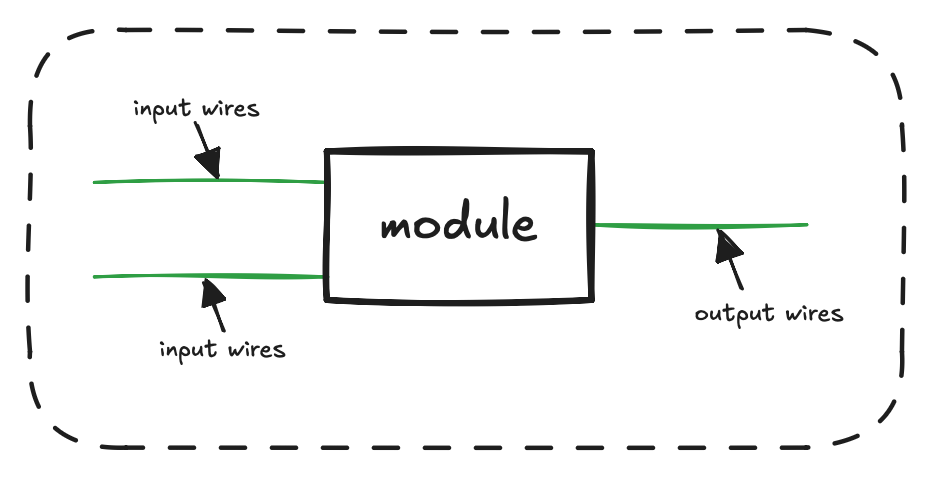
In this example, we have two input wires that represent two 8-bit inputs, and an output wire representing a 9-bit output. The “module” in between those wires represents our actual logic of how those two numbers are added together.
This logic in SystemVerilog can be represented as:
module adder (
input [7:0] a,
input [7:0] b,
output [8:0] sum
);
assign sum = a + b;
endmoduleNow, to take this from software to hardware, you have to use something known as an FPGA (Field Programmable Gate Array). An FPGA can be used to test that your digital logic actually works in hardware; this is known as synthesis. For this project, we will be using the DE1-Soc board to test our chip, and Quartus to synthesize our design.
03 / The idea
What is an LPU?
LPU stands for Language Processing Unit. The LPU differs from a traditional chip in many ways, but the overarching idea is “deterministic execution”. The term deterministic execution refers to the idea that the chip does not know what to do, except what it is told to do, and the result of said execution must have predictable timing. If an operation is executed multiple times, it should take the same number of clock cycles3 for each execution. Hardware is dumb. A chip does not think. It is just a collection of microscopic physical switches (transistors) arranged to route signals. The philosophy behind the design of the LPU strips complex control logic off the chip and moves all the intelligence to a piece of software called the compiler.
What is a Transformer?
Imagine reading a sentence where words contextually highlight each other. In the sentence "The bank of the river", the word "bank" connects to "river" rather than "money". That is the idea behind a Transformer: to see what words “attend” to others. To actually generate text, transformers “predict” what the next word is going to be. For example, when you type on your phone and the keyboard suggests the next word, that is the transformer at work predicting what you are going to say next. Therefore, a transformer's job is to predict what is going to be said next, which is the basis all modern LLMs like GPT and Claude are built on.
The Model We Targeted: MicroGPT
MicroGPT is a scaled-down Transformer that is trained on simple text, like names, to predict the next character in the sequence. Next-token generation is the process of predicting the very next word based on previous context, repeating this loop over and over. Our focus was not on scale, but on validating the core concept. If we can prove why a module can run a certain arithmetic operation efficiently, we can scale it up given the tools we have today. However, the most important part remains proving why something works. By using MicroGPT, we got rid of any unnecessary parameters and isolated the most important idea of the entire project.
Interactive MicroGPT example
Predict the next character
The prefix “Ya” can lead to several names. The model ranks “s” first, but “n” is also plausible.
Press Reset to try again.
This is an illustrative probability demo designed to explain next-character prediction.
These two formulas may seem scary at first glance. However, how we designed our chip to be able to compute arithmetic such as these, and the significance these formulas hold will be covered in this article.
04 / Matrix execution
MXM
The vast majority of arithmetic work in a standard transformer consists of matrix multiplications (matmul), making matmul acceleration critical for modern AI accelerators. Inside the LPU, the Matrix Execution Module (MXM) is responsible for computing matmuls efficiently.
Aside from accelerating matmuls, it should also fit the philosophy of the LPU; it should be deterministic. The term deterministic refers to the idea that the timing of every matmul must be predictable; we should know exactly how many clock cycles the MXM will take to finish every matmul. To meet these criteria, we decided to make the hardware as dumb as possible.
In saying that hardware is "dumb", we are not referring to its accuracy or performance. Instead, it requires explicit instructions, like an instruction manual, that specify when to load weights and inputs, start a matrix multiplication, or accumulate outputs. In short, the LPU is built to run on explicit instructions, where the timing of those instructions will always be the same.
The first step to designing our MXM was to understand the anatomy of a matmul. At its core, the matmul consists of many independent dot products between rows and columns of two different matrices. Each dot product requires a sequence of multiplications, followed by additions, which can be implemented through a multiply-accumulate (MAC) unit.
The MAC unit then becomes the fundamental computational block of our MXM.

Now, to zoom out and understand how these dot products are arranged in a matmul, let's look at an example for a 2x2 @ 2x2 matmul, and write out the resultant dot products.

We notice that the dot products are also in an array, and if each MAC unit is responsible for one dot product, we can arrange these MAC blocks into something known as a MAC array!
To understand how the MAC array works, let's look at the first outer product of the matmul:
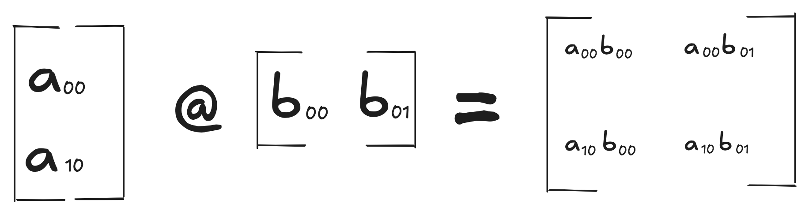

When we place initial outer products inside the mac array, we get this arrangement:
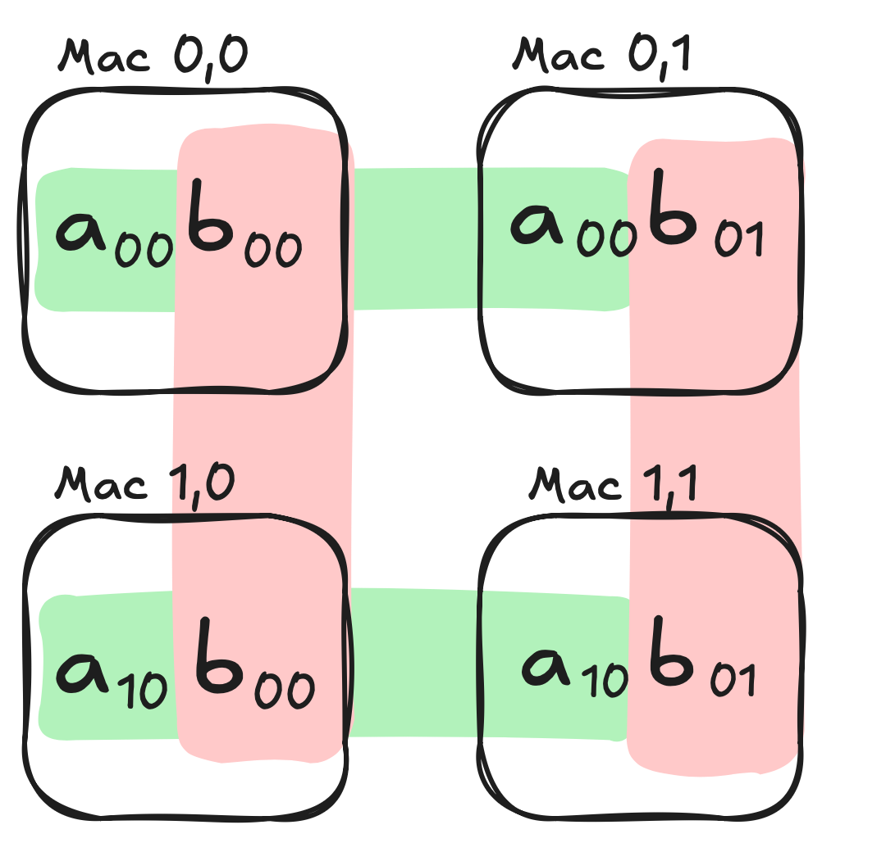
Over here, we can observe from the topology of the matmul that the rows of the MAC array share inputs (highlighted in green), and the columns share the weights (highlighted in red). As a result, when we wire the array, we can have a row of the MAC share the input wire, and a column share a row wire.
A MAC array also allows us to introduce “parallelism,” meaning each MAC unit can compute the dot product and accumulate independently!
When we introduce the wires into the MAC array, it can be visualized as:
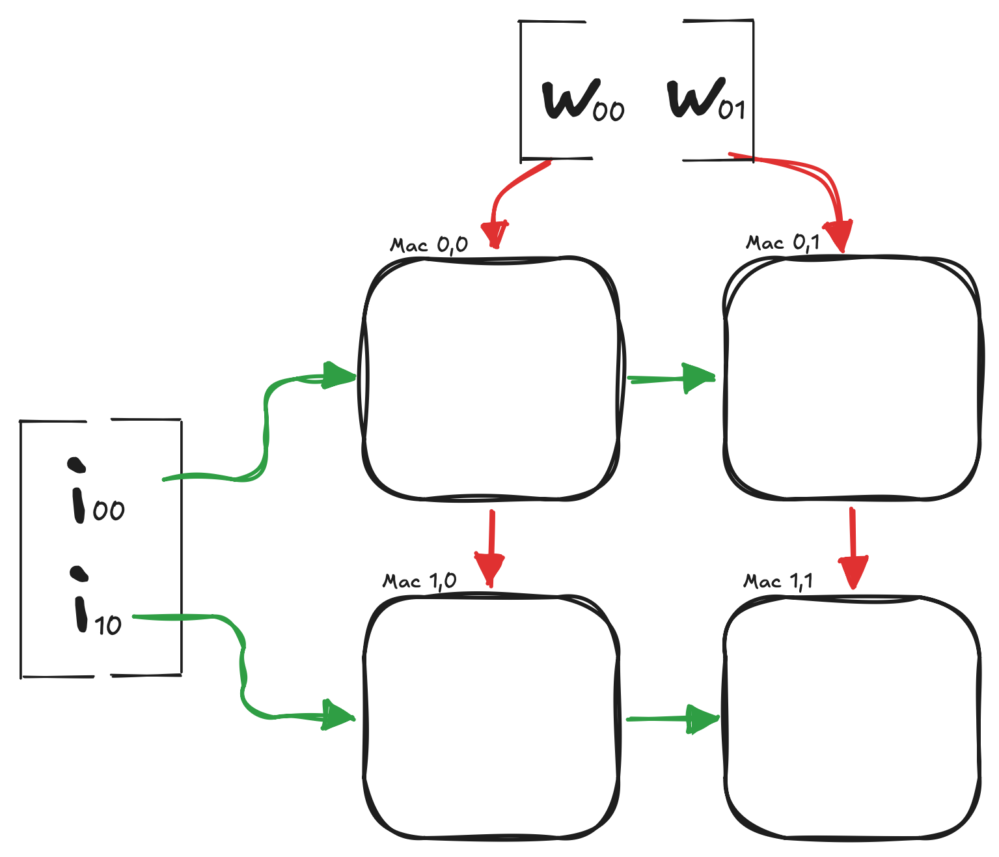
In the diagram above, the green wires carry the inputs to the right, and the red wires carry the weights down a column.
This is how we first visualized the MXM! We then realized that for this arrangement, inputs would need to pass through a MAC unit before reaching downstream MACs. Meaning, if we want i00 to go to MAC 0,1, it would have to go through MAC 0,0 before reaching its destination. It would mean that for MAC 0,1 to compute its respective dot product, it would be dependent on MAC 0,0’s timing (as if MAC 0,0 is not complete, it cannot go to MAC 0,1).
We decided that the inputs and weights should arrive at their respective MACs at the same time to maintain our idea of independence. That would cause the MAC array to look something closer to this visualization:
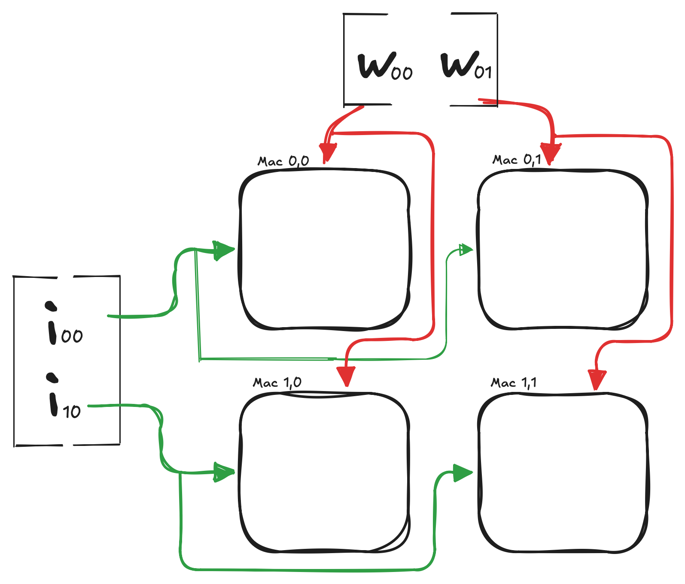
This tweak in the design allowed us to bring our idea of inputs and weights arriving at their respective MAC’s without delays. This style of wiring also introduces a potential flaw in the design. The wiring gets increasingly more complicated as the design scales up. This is only a 2x2 MXM, whereas the real LPU is a 320x320 grid. Having these large wires between the MAC units may cause further complications when it comes to bringing the hardware into reality, whether in FPGA or an actual tapeout (physical silicon).
Our original design is closer to what modern ASIC’s4 actually use for accelerating matmuls, and that design is famously known as the Systolic Array!5
Over here we can see the differences in the wiring of our original design and the design we settled on.
A goal we had for this project was to build an intuition for invention, rather than building pre-existing architectures; therefore, we went ahead with our version of the MXM!
Animation of MXM
Now, how does the MXM get applied to language model workloads? Let's look back at the formula we saw above.
The Q, K, V variables in this formula represent the Query, Key, and Value vectors.
To learn more about these, let's imagine we have the input “Thinking Machines”. If we look at the words individually, who is thinking? What is being thinked about? Who is the machine? What does the machine do? These questions can be answered through these matrices!
In terms of Query, the word “Thinking” may encode the questions: what is the subject? What is the object? What are the nearby nouns?. The Query vector includes these questions so the model can learn which information is relevant.
For Key, the word “Machines” may encode “I am a noun”, “I can be an agent”, “I often act”. So K is like labels for each word. Therefore, Query searches through Keys to find answers.
As for Value, this vector may encode the information you get when you choose this word; V decides how much context you take per word.
These matrices are generated by multiplying the input (X) with Query weights, Key weights, and Value weights.
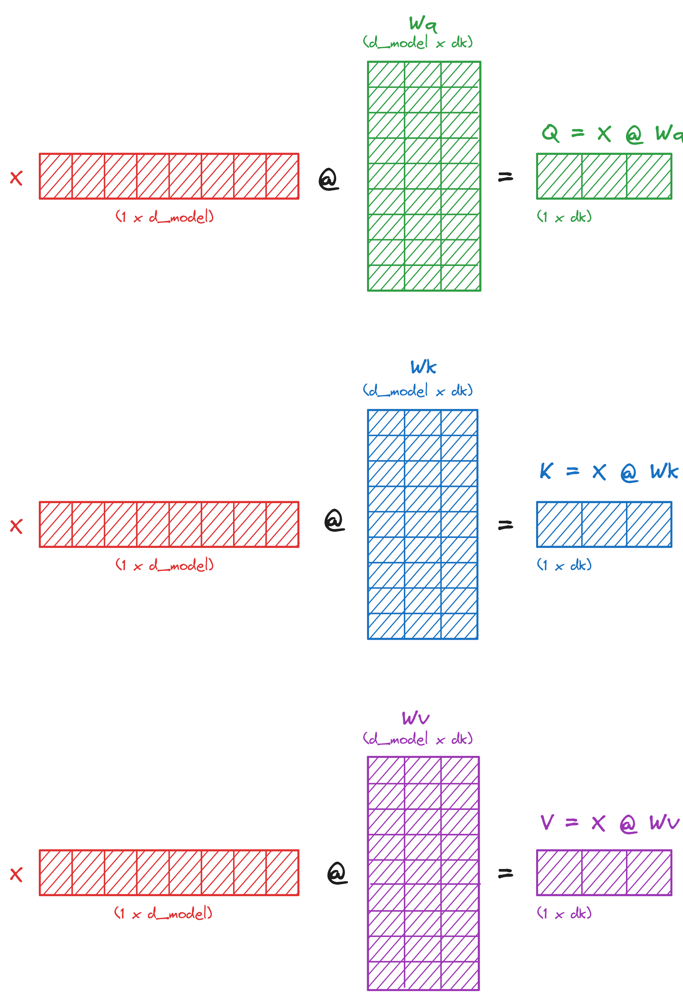
These weights are generated during training, which is a whole different part of machine learning; however, for now, we will only look at what happens during inference (using the model). Each input ("thinking", "machines", all of these are independent inputs) has its own Q, K, V vectors. Once we have the Q, K, V vectors, we can then multiply \(Q @ K^{\mathsf T}\). Why a multiplication? If we look at the dot product and why it's done, the purpose is to understand how close two different vectors are. The purpose of Q is the question the word is asking.
If we take the Q vector for the machines, and matmul it with the K vector of machines, it will give a value very close to 1.00 indicating the two vectors are very similar, but if we matmul the Q for machines, and K for printer we may get a non zero vector, also not close to one, this would mean “the vectors have some relationship to one another, but are not the same”. The matmul of Q for “thinking” and K for “machines” might be way closer to the previous one, as it might denote “the vectors are both machines used for some sort of processes.”.
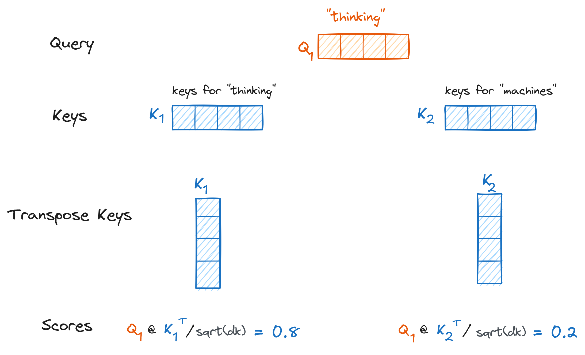
The purpose of the matmul in this case is to give the vectors some sort of relationship to one another! We then follow up with scalar/vector operations to complete this formula.6
05 / Matrix movement
SXM
Now looking at that matmul, there was a strange T above the K vector.
That T denotes something called a Transpose. When neural networks are performing calculations using the Attention formula, they usually need to perform this Matrix Transposition. Simply put, transposing a matrix means the orientations of the rows and columns get flipped diagonally.
The rows become columns, and the columns become rows. Anything to do with reordering the dimensions of a matrix, transposition, or rotation is done with the SXM.
06 / Vector execution
VXM
VXM v1
The Vector Execution Module (VXM) is the module responsible for scalar and vector operations. When the LPU was designed, the compiler was kept. They believed that with basic operations such as addition, subtraction, multiplication, exponentiation, etc, the compiler could string these operations together to form complete formulas. When we started work on the VXM, we wanted to get the basics down, so we started with 3 operations:
- Bias Add (addition)
- Scale (multiplication)
- ReLU.
We saw ReLU in the formula earlier, so let's dive into why we use it. To learn ReLU, we first need to know what an activation function is. These things are responsible for removing the linearity in neural networks. To learn what a “neural network” means let's look at the basis of this concept.
In an actual brain, neurons receive electrical signals from their surrounding neurons, and when it reaches a threshold, the signals are passed onto the next neuron. These “AI” neurons work in the same way; they take in data, perform calculations, and decide whether or not to pass that information onto the next layer.
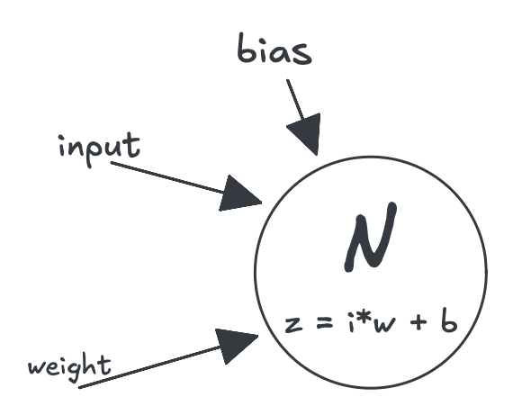
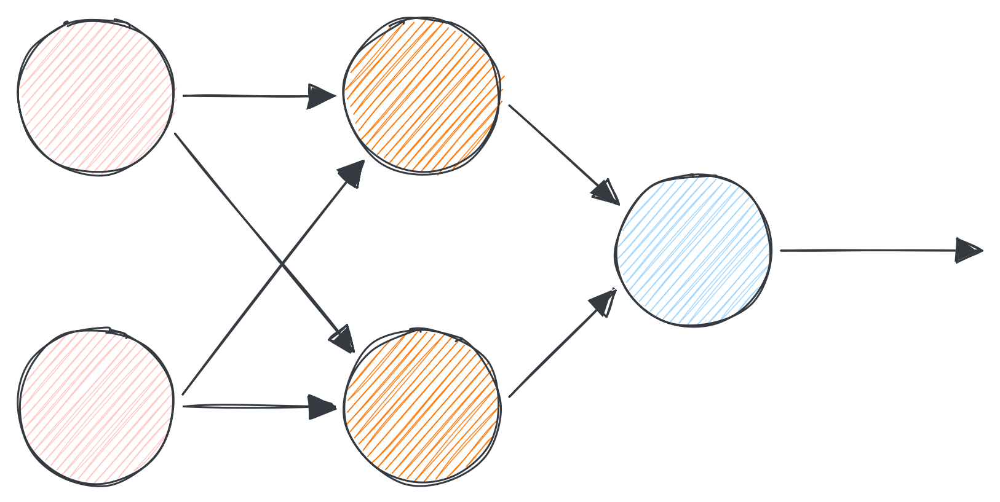
Above is an image of a simple neural network. In every line of the network, y = mx+b is used. As we move down the network, we keep stringing that same formula together to end up with a straight line at the end of the network.
When data enters a neuron, there are three components that are calculated. “x” is the input data, “m” is the weight (which is how much importance the input has), and “b” is the bias, which is the shifting of the line up or down. These neurons are stacked on top of each other to create a network.
Let’s walk through an example:
Let’s start with
Let the input \(x\) be \(2x+3\), let the weight \(m\) be \(2\), and let the bias \(b\) be \(1\).
So the value from layer 1 is:
Layer 2 takes that previous value and uses it as the input in the second layer \((x=y_1)\):
From that we get: \(y_2=4x+7\).
Y = 4x+7 is still a linear equation. You could stack an infinite number of neurons on top of one another, but it will stay linear without an activation function.
Let’s take a look at this graph to understand how it really works. You want to classify two fruits, lemons and tomatoes, on two different features, redness and tanginess.
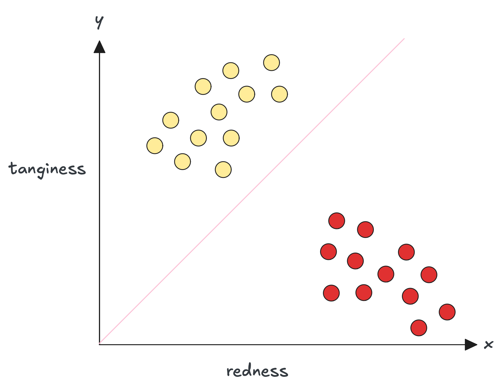
The data on the graph forms groups. The apples are red but not very tangy, so they group up at the bottom right corner, while lemons are not red and very tangy, so they group up on the top left. The line in between the two groups is the neuron. It uses y = mx + b to create a boundary, so everything on one side is a part of the apple group, and everything on the other side is a part of the lemon group.
In the real world, data has more than 2 variables. So let’s add a third dimension and call it hardness. The graph becomes a 3D box, and the apples and lemons are data points floating around the box. Now, because of the added dimension, the linear equation expands to become y = m1x1 + m2x2 + b. Don’t worry, this may look a little more complex, but the concept is still the same at its core. Instead of drawing a line on a 2D graph, the neuron now creates a flat plane that slices through the box to separate the groups.
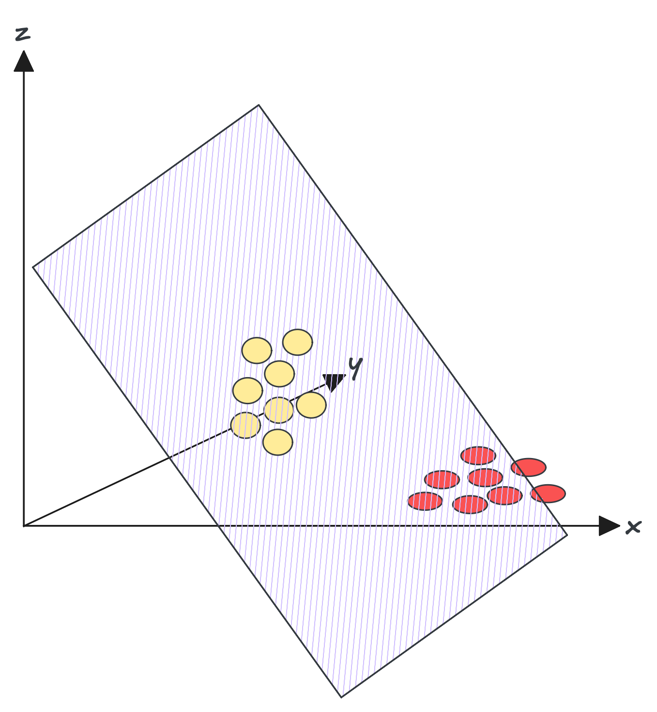
Let’s talk about where we run into an issue. The problem with y = mx + b is that it’s always flat. For example: if the apples are surrounded by oranges in the middle of the box, they can’t be neatly split with a plane. The sheet will always have to slice through the data.
This is where we need ReLU.
ReLU is a concept that runs on a very simple premise: If a number is negative, set the output to 0 If the number is positive, let it pass through.
By following these rules, ReLU breaks the linearity. It takes the flat plane and creates bends. Using these planes that can bend, you can combine them with multiple other bent planes to almost create a box that groups up only the apples, leaving the oranges as they are.
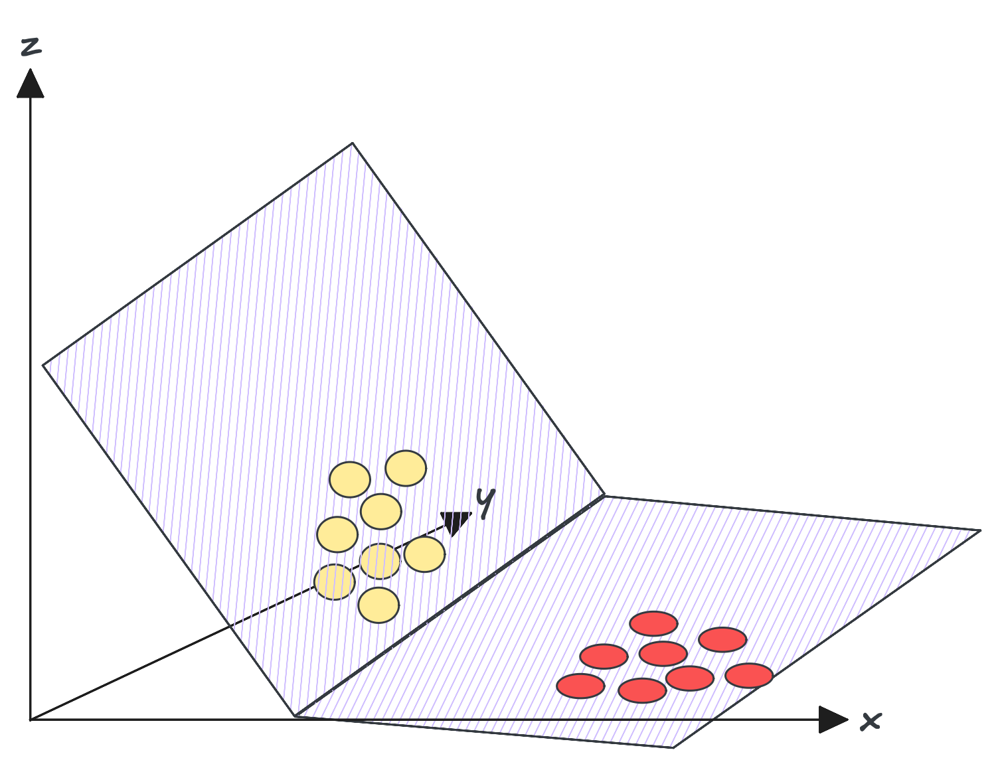
After adding ReLU to our graph, we can now see that there are two lines, one that's fully flat in the X-Y plane and a linear line after that. This allows our function to create the prediction that if the output value of our Z function is close to 0, the probability is that the fruit is likely a tomato, and the higher it is from zero, the likelihood that it is a lemon increases.7
There are also other activation functions such as Sigmoid and GeLU / SiLU / SwiGLU8; however, ReLU provides the perfect balance between simplicity and effectiveness, so we decided on that.
As a reminder, we now have Bias Add, Scale, and ReLU in the VXM. Now that we had our 3 operations, we wanted to make formula creation (stringing operations together) easy for the compiler, so we decided that adding a selection of which operation you want at a time would be best. To do that, we needed to use a hardware block called a multiplexer (MUX).
A MUX is super useful and can almost be visualized as a train track selector: if I flip a switch to the left, it should choose the left lane; if I make the switch go to the middle, it should pick the middle lane and so on. Instead of a switch, they work on control bits. If I pass a zero into the control line, lane 0 is my output; if I pass 1, lane 1 is my output. This can be scaled to as many lanes as you need, but for our purposes we would require a 3-to-1 MUX, where the control bit is now 2 bits wide instead of 1 bit.
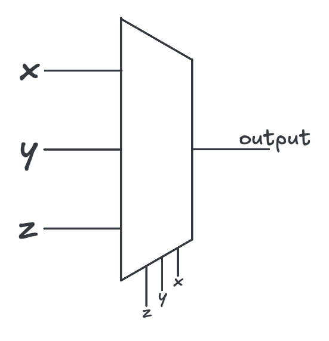
When the compiler sends its instructions, 2 of those bits would be used to control our 3-to-1 MUX inside our VXM and choose which of our 3 operations to output. Thus making our first version of the VXM:
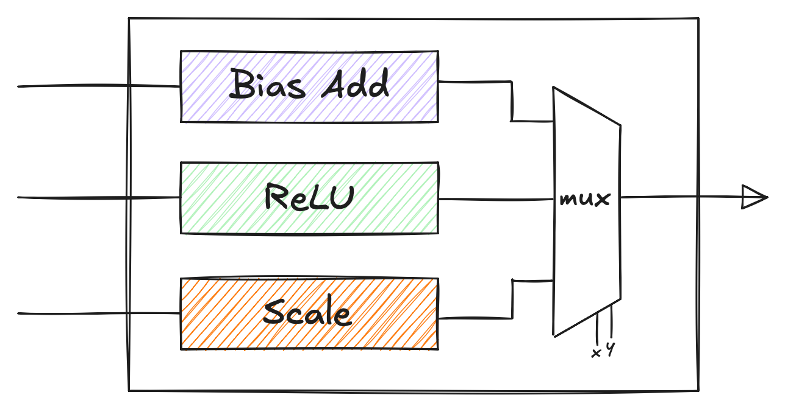
However, this design didn’t come without flaws, its main flaw was that data would have to completely exit the VXM before coming back and hitting another operation. On a bigger scale with more operations, this would become a major traffic issue.
Another flaw we noticed was that this only operated on one element at a time, whereas a row of matmul would have multiple elements at a time.
For example, if we had to run add on 2 data lines and needed to run scale after, we would have to completely exit the VXM and feed back into scale. For a project that only needs bias addition and an activation function, this would be more plausible. However, for our Language Model we would need softmax, RMSNorm, Vector Add, etc, which forced us to go back to the drawing board and redesign this architecture.
VXM v2
When we redrew this architecture, the main problem we had in mind was “how do we implement the math so that the element never leaves the VXM before coming back in?”
So we had the idea of “splitting” up the operations into “phases”. Phases being operations such as bias add, ReLU, Scale, etc.
So while an element is in ReLU, the next queued-up element can enter a bias addition. This creates overlap between operations! As the animation shows below, if a00 needs to go through bias addition and ReLU, instead of doing both at once and having the other elements such as a01 and a02 wait for it, we can split the operations up, so while a00 is in ReLU, a01 can start Bias addition. This concept is known as throughput, and with our pipeline we have increased throughput as more operations are starting at an arbitrary point in time compared to v1!
Now sometimes we may not need to do certain operations. For example, when the result of \(Q @ K^{\mathsf T}\) needs to get scaled by \(\sqrt{d_k}\), we don’t need that value to go through bias add or ReLU.
That is when we decided to add a MUX between each stage! By adding a MUX, we can include the wire before it goes through an operation, allowing us to bypass it based on the select bits sent via the compiler. This is when we truly started to understand how much power the compiler truly holds for the LPU.
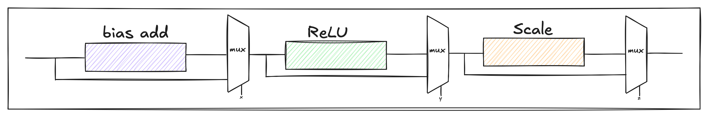
To address the flaw of operating on multiple elements at a time, we expanded the VXM to hold multiple lanes. For example, let's say we have a row [a00, a01]; as of yet, we can only do computations on one element at a time. We wanted to parallelize this process by being able to execute an operation on each row at a time. That is when we introduced multiple lanes!
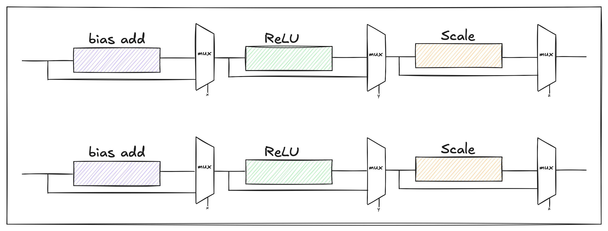
After all of the elementwise operations (bias+, ReLU, Scale) are completed, we collect them into a row to proceed with the vector operations.
Now its time to implement vector-wise operations, including Softmax, RoPE, RMSNorm, and Vector Add (used for residual addition)9.
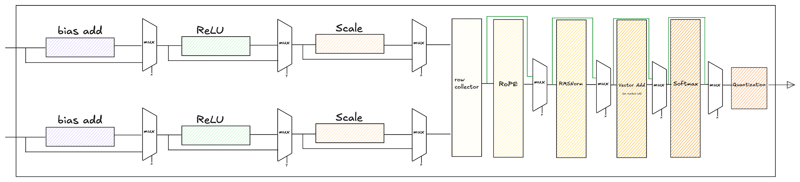
Groq10 designed their LPU to be extremely flexible. Inside their VXM, they didn’t have a physical softmax operation. Instead, they designed their hardware with basic calculators that can do operations like add, multiply, finding maximums and minimums, etc. To execute operations like Softmax, they completely rely on the compiler. The way it works is that the compiler breaks down the complex request into tiny ones that the hardware can perform using simple arithmetic blocks. For example, if they wanted to calculate:
(x * a + b) * c,
The compiler tells the hardware to send data x and a into a multiplier block, take that result and send it into an adder block to add b, then take that result to send it into another multiplier block to multiply with c. This design choice allows them to continue using their physical chip; in case of any big changes, such as a new activation function being discovered, they only have to update their compiler. However, all the instructions take up a lot of memory and bandwidth.
We took the opposite approach. Our focus was on hardware, so we didn’t mind sacrificing flexibility as long as we maintained some sort of determinism within the chip. Hence, we hardwired RMSNorm, Softmax, and RoPE directly. While we sacrifice the ability to make quick updates if there are any big changes, we have the massive advantage of speed.
07 / Softmax and lookup tables
Softmax explained
Remember when we introduced activation functions? Well, it's time to dive into another one; this time into a function called “softmax.” Softmax is used to turn an array of random numbers into a set of probabilities all adding up to 1.0.
[-2, 4, 1, -1] —-> [0.11, 0.84, 0.04, 0.01] 0.11 + 0.84 + 0.04 + 0.01 = 1.0
Remember when we mentioned that doing Q @ KT gives a similarity score for how similar the vectors are? We use softmax to give percentages of “context”!
For example, let's have Q1 represent the vector for “thinking”
K1 represent the Key vector for “thinking”
K1 represent the Key vector for “thinking”
K2 represent the Key vector for “machines”.
Without context, “thinking” and “machines” are separate
When we do:
We can infer from these results that, for the word "thinking" in this sentence, approximately 80% of the information comes from the word "thinking" itself and 20% comes from the word "machines". In other words, when the model looks at “thinking”, it also pays attention to “machines”, helping it understand that the sentence is discussing machines that think.
Softmax is represented by this crazy formula:
Thankfully, it's very easy to understand.
Our friend Surya had actually already implemented softmax in hardware before11! It included a divider module, exponential module, and the means to chain them all together, so we just ported this module into our own VXM. When we eventually tested the functionality, we noticed that this softmax gave correct answers but took around 300 clock cycles to complete.
For reference, a 4x4 @ 4x4 matmul takes around 14 clock cycles. This is an issue as if a matmul finishes before the softmax does, those elements will have nowhere to go. Softmax became a major bottleneck.
That timing issue is caused by the complexity behind how division and exponentials are created in hardware. Multipliers and adders are relatively easy to build out of logic gates, making them cheaper operations, but one 8-bit division module requires roughly 200 to 1,500 logic gates! All of those gates add computation time; repeat that operation over and over, and our LPU would take minutes for just a single token output.
But what if the hardware knew the answers to division/exp questions as they were asked?
Look Up Tables
That's when we took a look at how the actual researchers solved this issue, and we discovered something incredible: LUTs! A Look Up Table (LUT) is a table that stores pre-calculated output values for a set of inputs. Instead of performing a calculation every time, the system simply looks up the corresponding value in the table, which is much faster. This also has an added feature to approximate the result of an operation. Now the term “approximation” seems very scary for hardware, or at least it did to us before we dove deep into it, but look at it like this:
Let's look at the example:
Division can also be interpreted as multiplying the reciprocal. Therefore:
This circles back to the idea of arithmetic in hardware; multiplication and addition are cheap. Now technically \(1/3.107\) involves division, but that is where LUTs come in!
We store a bunch of reciprocal values into memory such as:
| Divisor \(x\) | Stored \(1/x\) |
|---|---|
| \(3.08\) | \(0.32468\) |
| \(3.09\) | \(0.32368\) |
| \(3.10\) | \(0.32258\) |
| \(3.11\) | \(0.32154\) |
Now let's say we have to calculate:
In reality, the answer is:
In hardware using LUTs, we look for the closest stored divisor to \(3.107\), which is \(3.11\):
Now we do the final arithmetic:
Now if we compare the values:
Even though we approximated the value of this division, we got really close to the expected value. We essentially turn the division arithmetic into multiplication. The tradeoff in this comes out to be that there is a small error when comparing the actual value and approximated value.
The error value is hard to be zero; however, it can be as close to zero with design decisions. For example, if you see the divisor column in the LUT above, it is spaced out very lightly, incrementing over \(0.01\) every entry. However, if we make it less spaced out with something like:
| Divisor \(x\) | Stored \(1/x\) |
|---|---|
| \(2.75\) | \(0.3636\) |
| \(3.00\) | \(0.3333\) |
| \(3.25\) | \(0.3077\) |
| \(3.50\) | \(0.2857\) |
Now the divisor increments by \(0.25\); the closest value to \(3.107\) is \(3.00\), and in that case:
Which comes out to an error of:
An LUT with divisor values in very small increments is more accurate, but takes more space in memory; however, an LUT with larger increments is less accurate, but takes up less space in memory.
After implementing an LUT for division and exponentiation in softmax, we were able to get the clock cycles down to \(5\)! We also used this technique for RMSNorm and RoPE.
Chunking
At the moment, we have \(8\) lanes for the VXM, meaning \(8\) elements at a time can be processed. However, that created yet another bottleneck. If we only have \(8\) elements at a time, what if we need to run inference on a model that needs \(16\) lanes? This would mean that we would have to train a model for our demo that's fitted around hardware. This made us think about the current environment of computers at frontier labs. How can we further modify the chip so that it is flexible to the model it needs to run?
After analyzing and staring at the formula RMSNorm for hours, we noticed one potential path to success.
We noticed that there is a summation across the entire row. For example, if we had a row of \(16\) elements, all \(16\) of these elements must be accumulated before the operation can continue. Working with our \(8\)-lane VXM, we thought of a different approach: what if we process the first \(8\) elements, and store their partial sum? Then, when the next \(8\) elements arrive, what if we just accumulate those with the values we already have? This would progressively build the final row’s sum rather than have us expand to \(16\) lanes.
After those \(16\) elements have been processed, we can then move to the next stage and square them, followed by multiplying by \(1/d\), and then square rooting them.
This idea is known as chunking!
For RMSNorm, here is how we specifically used chunking
Chunking can also similarly be used in Matmuls; as mentioned prior, we have an \(8\times8\) MXM. If we want to train a model that has beyond \(8\) features, we can break it down into smaller matmuls. For example, if we have a \(256\times256 @ 256\times256\) matmul, and we only have an \(8\times8\) MXM, we can break the matmul down into \(32\) \(8\times8 @ 8\times8\) matmuls!
To keep parity with the rest of the chip, chunking was also used in softmax, RoPE, VectorAdd, and Quantization, as those are all limited by the size of a row.
08 / Throughput
Buffering
During an F1 race, one of the most crucial parts is the pit stop. The fastest pit stop ever is 1.80 seconds, meaning the pit crew took off 4 tires, acquired the 4 new tires, and then screwed them back on all under 2 seconds.
Now imagine if the pit crew had to look for the newer tires after unscrewing the used ones? They would have to unscrew the new tires, look for the newer ones, carry them to the car, and then screw them back on. Achieving a score like 1.80 seconds would be impossible under those conditions. Therefore, the pit crew finds the tires they need before the newer tires are even unscrewed.
This concept is known as Buffering, where in simple terms you store the next elements you need for a computation while a current computation is taking place. Let's look at the MXM; currently, Once the MXM is finished computing a dot product on current inputs, we have to wait until the next inputs get loaded before the next computations can start. To mitigate this issue, we introduced another buffer on top of the one we already have, so while the first dot product is being computed, we can preload the next elements!
Prior to this buffering, the MXM took 32 clock cycles to compute an 8x8 @ 8x8 matmul. After introducing double buffering, we were able to decrease that count to 25 clock cycles, approximately a 21.875% reduction in total timing!
This same principle can be applied for outputs! Let's say we need to start a new matmul, but the VXM is not ready to consume the current output. In that case, we can add registers on the output side to hold the current computation, allowing us to start the next computation.
We also applied buffering inside the VXM. We have 4 input buffers per lane, and 4 output buffers per lane.
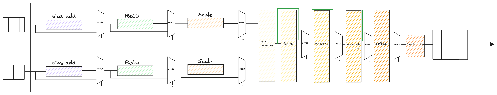
09 / Self-attention
Putting the math together
Now that we have all our mathematical blocks ready, we can have a look at the self-attention formula again:
So far we have learned everything up until \(Q @ K^{\mathsf T}\) and softmax; however, the only things that remain are \(1/\sqrt{d_k}\) and \(@V\)
The division by \(\sqrt{d_k}\) is used to prevent the values of \(Q @ K^{\mathsf T}\) from becoming too large for softmax.
For example lets say we have a row [20, 30, 40, 50]. If we compute softmax over that row, we get [0, 0, 0.000045, 0.99995], whereas a row of [2, 3, 4, 5] may give us [0.03, 0.09, 0.24, 0.64]. The latter is much more feasible due to what follows next, multiplying with V.
As we learned prior, the V vector is responsible for holding the actual contents for that specific word. So let's look back to our example of “Thinking machines”.
Let's say for the word “thinking” we get softmax results of [0.8, 0.2]. 0.8 being thinking, 0.2 being machines.
We multiply 0.8 by the V vector of thinking, and 0.2 by the V vector of machines.
After that, we combine those two vectors into one. Now we have 80% of the context from thinking, and 20% from machines!
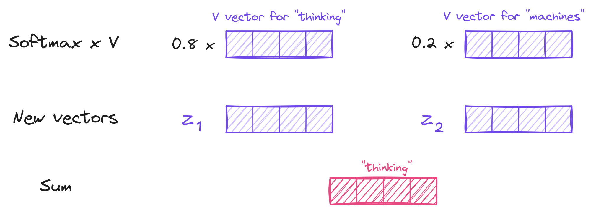
Congratulations! Now you understand how Language Models give context to each word!
10 / Data compression
Quantization
When we went to store these values into MEM, we realized two things. When operating on the MXM values, they accumulated them into int32, and the VXM operated on int32. However, we want to store these as int8. The reason being that while larger data types hold more accuracy and features, they also become more expensive to store in hardware!
To compress these values down to int8, we can perform quantization!
Quantization must be done with precision, as with int32 you have 4.2 billion unique values, and int8 you only have 256 unique values. Therefore, we treat each row uniquely.
To expand,
We can have one row with extremely large values like
[1200, 1800, 2400, 3000] in int32
And another row like
[200,300,400,500]
If we treat both rows the same and compress them down to int8, the latter row can become extremely small! We can denote the quantization of these two rows as:
After these calculations, we can notice that quantization is actually really simple! You can follow the steps
- Find the max of the row
- Divide that max by 127 to get the scale factor
- Divide the rest of the row by that factor
As you can see, the highest value will always be 127. Even though the two rows originally had different maximum values, each row requires a different scale factor to map its values into the int8 range. We hold the scale factor in MEM so it can be reused later to multiply back to its original values, or as close as possible.
11 / Positional embeddings
Positional Embeddings & RoPE!
So far, we have covered how a sentence gets tokenized, converted to IDs, mapped to embedding vectors. So the model right now before training can successfully observe words within a sentence as vectors. Let’s use the phrase “thinking machines” as an example here on out.
As previously learned, we can represent this phrase as vectors.
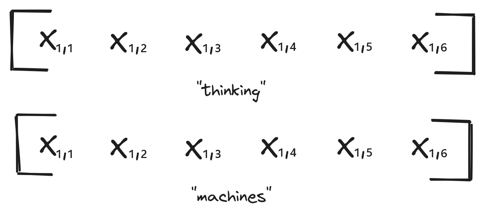
However, one flaw at the moment within the embeddings is that the model has no idea which order these words are in. If we extend this sentence to something like “thinking helps machines.” The model may understand which action is being done, but it may not be able to distinguish between thinking, help, and machine, as it is not aware of their positions. “Machines help thinking” is mathematically similar to “thinking helps machines.” So here comes RoPE! RoPE stands for “Rotary Positional Embeddings”.
The entire idea for RoPE is to “rotate” a vector based on the position.
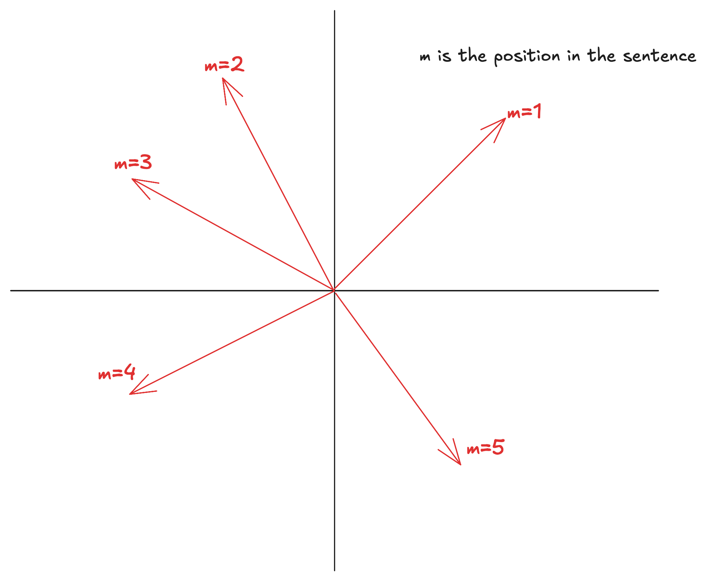
In this graph, you see vectors for 5 tokens. The first one (m = 1) is at the vector's original position, and then m = 2 is rotated slightly away from one, m = 3 is rotated even more, and so forth. So when the model observes these tokens, it notices immediately which one came first, second, third, etc. Furthermore, none of the actual information the vector wants to convey gets altered, only the direction of the vector changes. This is a way for the model to see where the word is in the sentence geometrically in space without remembering, or counting.12
Example: rotating the second token with RoPE
Let’s dive deeper into RoPE with a sample calculation. In an actual setting, a vector could have hundreds of elements. However, for the sake of simplicity, let’s walk through an example with just 6.
-
Start with the token vector and its position.
Let’s say we have a vector that represents the second token in a sentence. Since the positions index from 0, the second token has a position of \(p=1\). We can represent it as:
\[\mathbf{x}=\begin{bmatrix}1&0&1&0&1&0\end{bmatrix}^{T}\] \[p=1,\qquad d_{\text{model}}=6\]As you can see, the vector has 6 elements, so \(d_{\text{model}}=6\).
-
Split the vector into pairs.
It is hard to imagine rotating one vector across 6 dimensions. Therefore, we split the vector into pairs of 2. That way, we go from one 6D vector to three smaller 2D vectors:
\[\mathbf{x}^{(0)}=\begin{bmatrix}1\\0\end{bmatrix},\qquad \mathbf{x}^{(1)}=\begin{bmatrix}1\\0\end{bmatrix}\] \[\mathbf{x}^{(2)}=\begin{bmatrix}1\\0\end{bmatrix}\]The superscripts \((0)\), \((1)\), and \((2)\) are the indexes for the three pairs. Each pair will now be rotated by its own angle.
-
Calculate the angle for each pair.
Now it’s time to calculate the angle at which each pair will rotate. The angle is given as:
\[\theta_{p,i}=p\cdot 10000^{-\frac{2i}{d_{\text{model}}}}\]The \(i\) indicates the index of each pair, so the first one starts with \(i=0\), and it increments by 1. The \(p\) is the position of the token in the sentence, so our second token has \(p=1\). The number \(10000\) is a constant, and \(d_{\text{model}}\) is the number of elements in the full vector. Applying the formula with \(p=1\) and \(d_{\text{model}}=6\) gives:
\[\theta_{1,i}=10000^{-\frac{2i}{6}}\]\[\theta_{1,0}=10000^{0}=1\text{ rad}\approx57.30^{\circ}\] \[\theta_{1,1}\approx0.0464\text{ rad}\approx2.66^{\circ}\] \[\theta_{1,2}\approx0.00215\text{ rad}\approx0.123^{\circ}\]Radians are just another way to measure angles, like degrees. As we can see, the first pair rotates the most, and each pair after it rotates by a smaller amount.
-
Put each angle into the rotation matrix.
Now that we have the angles, we can apply the rotations. For a pair \(\begin{bmatrix}a&b\end{bmatrix}^{T}\), we use the following rotation matrix:
\[R(\theta)=\begin{bmatrix}\cos\theta&-\sin\theta\\\sin\theta&\cos\theta\end{bmatrix}\]The \(\cos\) and \(\sin\) values describe the new direction of the pair after it rotates. Multiplying the matrix by \(a\) and \(b\) gives us two new values:
\[a'=a\cos\theta-b\sin\theta\] \[b'=a\sin\theta+b\cos\theta\] -
Rotate all three pairs.
In our example, every pair is \(\begin{bmatrix}1&0\end{bmatrix}^{T}\). This makes the calculation simpler, as each rotated pair becomes \(\begin{bmatrix}\cos\theta&\sin\theta\end{bmatrix}^{T}\). Let’s apply the first angle:
\[\mathbf{x}'^{(0)}=R(1)\begin{bmatrix}1\\0\end{bmatrix}\] \[\mathbf{x}'^{(0)}=\begin{bmatrix}\cos(1)\\\sin(1)\end{bmatrix}\approx\begin{bmatrix}0.5403\\0.8415\end{bmatrix}\]Now we repeat the same calculation with the other two angles:
\[\mathbf{x}'^{(1)}\approx\begin{bmatrix}0.9989\\0.0464\end{bmatrix}\] \[\mathbf{x}'^{(2)}\approx\begin{bmatrix}1.0000\\0.00215\end{bmatrix}\] -
Join the rotated pairs back together.
After applying the rotation to each pair, we simply concatenate them back together in their original order:
\[\mathbf{x}_{\text{RoPE}}=\operatorname{RoPE}(\mathbf{x},p=1)\] \[\mathbf{x}_{\text{RoPE}}\approx\begin{bmatrix}0.5403\\0.8415\\0.9989\\0.0464\\1.0000\\0.00215\end{bmatrix}\]Now we have one 6D vector again! The values have changed because the vector points in a new direction, but the vector has not been stretched or compressed.
-
Check that the vector keeps the same length.
Before we finish, let’s make sure the rotation did not change the length of the vector. Before rotation, each pair has a length squared of \(1^{2}+0^{2}=1\). Adding the three pairs gives:
\[\left\lVert\mathbf{x}^{(i)}\right\rVert^{2}=1^{2}+0^{2}=1\] \[\lVert\mathbf{x}\rVert^{2}=1+1+1=3\] \[\lVert\mathbf{x}\rVert=\sqrt{3}\]Each rotated pair also has a length of 1 because \(\cos^{2}\theta+\sin^{2}\theta=1\). Therefore, the complete rotated vector has the same length:
\[\left\lVert\mathbf{x}_{\text{RoPE}}\right\rVert^{2}=1+1+1=3\] \[\left\lVert\mathbf{x}_{\text{RoPE}}\right\rVert=\sqrt{3}\]
As we can see, RoPE changes the direction of the vector, but not its length. At \(p=0\), every angle is 0 and the vector does not rotate. At \(p=2\), every angle is twice as large as it was at \(p=1\). This is how the model can use the direction of a vector to understand where a token appears in a sentence!
12 / Instruction control
ICU
Now let's discuss how the compiler actually talks to the LPU. In the LPU, we have something called an Instruction Control Unit (ICU). As we have mentioned, the core idea of the LPU is that the hardware is dumb and doesn't know how to handle different types of AI models; the compiler is what tells the chip how to run them. The compiler would generate a 96-bit-long binary string and send it to the ICU. When the ICU receives this string, it starts to unpack it and send specific bits off to different parts of the chip.
Each bit in the string is assigned to a different location on the chip, and it looks like this,
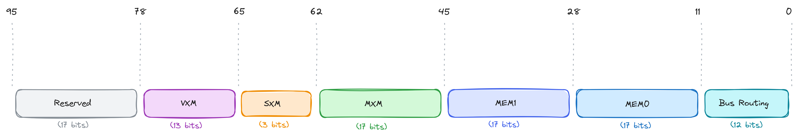
Now the parts of the chip that these bits go to have actually been discussed already; it's all the MUX’s in the chip! The select bits in each MUX are fed directly from the ICU and lead to the deterministic approach of the LPU.
Let's take a quick look back at the VXM for a second.
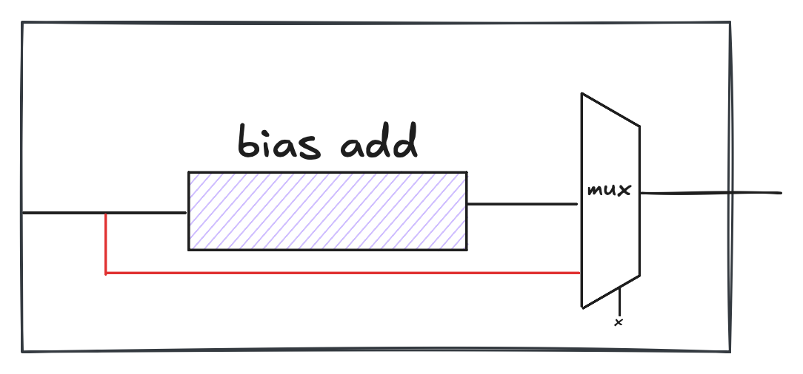
You can see how the output of scale and the input of scale both feed into the MUX. The compiler will send its instructions to the ICU, and then the bit assigned to that MUX decides whether scale should be used or bypassed, all happening in nanoseconds!
The ISA (Instruction Set Architecture) handles data movement very efficiently using a system that we designed. The first path is the westbound bus, where data can only travel from the east to the west. The second path is the eastbound bus, which handles data movement from the west to the east. To keep the system flowing fast without any stalls, each direction only has one unit sending data and one unit receiving it per instruction. However, both the east and westbound buses can be used together for a single instruction. We built the buses using a simple MUX to DEMUX13 architecture. It works like a railroad switch where the compiler is the one controlling the switch. A combination of bits go into the MUX which flows from one of the buses and it’s received in the other end through a DEMUX. From there, it sends the data to the correct module.
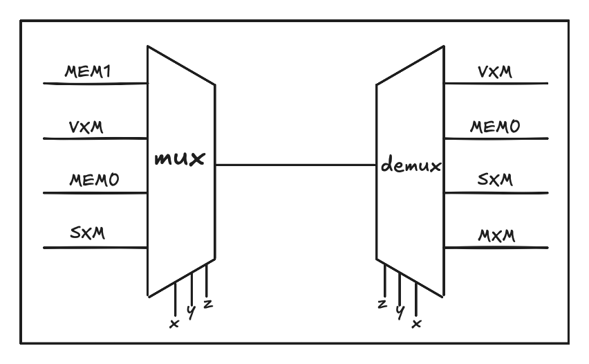
13 / On-chip memory
Memory Hierarchy
The memory in an LPU is stored on the chip itself in something called SRAM, which is just a collection of buffers and registers. This is very different compared to the memory hierarchy of other AI accelerators.
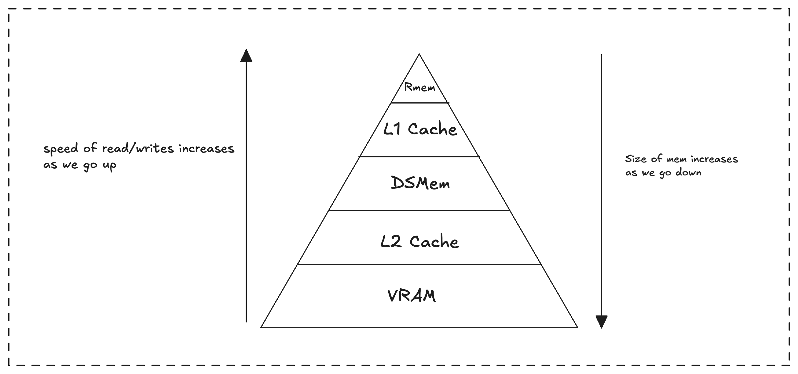
This former diagram is the memory hierarchy in a GPU14, We notice a relationship with the size of storage: the smaller the storage, the faster it is to retrieve an element; the larger the storage, the slower it is. Registers and Cache cost more per area on the chip, and the slower memory storage, RAM and SSD, are cheaper. When they are all used together, the cost is minimized, and performance is maximized.
The LPU decided to completely go against memory hierarchies so it does not have to keep fetching data and instructions from DRAM or HBM15. Instead, the only MEM that exists on the LPU is on-chip memory, meaning the memory you see in the animation is the only memory that exists.
While working with transformers, we run into two specific bottlenecks: memory-bound workloads and compute-bound workloads.
When the processor spends more time retrieving elements from memory than actual arithmetic operations, a memory-bound workload occurs.
A compute-bound workload is when the arithmetic operations are the bottlenecks. The memory feeds the arithmetic units, but they are not fast enough or have reached maximum capacity on the task at hand.
These two types of bottlenecks appear during different stages of text generation. There are two main parts that take place when we generate text: prefill and decode.
During prefill, the entire prompt is read all at once, so let’s say the goal is to output the name “Aaron”; we would input Aar, which would be read and processed by performing matmuls. When this is happening, the arithmetic units are at max capacity, making this part compute-bound.
Decode is when the response is being generated. To generate an output, the chip loads a massive number of parameters from the memory, does some arithmetic, and repeats the process. This part is memory-bound because the arithmetic units aren’t being used as much while the memory units are working at max capacity.
To solve both bottlenecks, we use something called a KV cache; the KV stands for Key-Value. This is the chip’s short-term memory. When the prefill process is happening, the keys and Values of the previous tokens are saved in a cache. This prevents unnecessary calculations and increases the speed of the output during the decode phase.
However, since an LPU does not follow a memory hierarchy and only includes SRAM, this means it does not have a large amount of storage, making the KV cache harder to maintain, whereas DRAM or HBM have large amounts of storage capabilities making it a much better fit for KV cache.
Coming back to how memory on an LPU works, the entire hierarchy is completely disregarded! Large amounts of SRAM (caches) are on the chip, so since there is no hierarchy to follow, the LPU does really well navigating memory-bound workloads like decode.
Let’s take a look at traditional GPUs really quickly. GPUs are packed with thousands of cores that perform arithmetic calculations, so they are amazing at compute-bound workloads like prefill. But they rely on the memory hierarchy, so they aren’t as great at memory-bound workloads like decode.
After learning this, we guessed that Nvidia acquired licensing rights to Groq’s LPU to build some sort of inference disaggregation system that does compute-bound workloads on the GPU, and memory-bound workloads on the LPU.16 This also mitigates potential KV caching issues an LPU would hold by using the GPU for the KV cache!
14 / Number formats
Numerics
To represent the actual numbers that the chip used, we originally used an 8-bit integer for our data. Integer arithmetic is the easiest to implement in hardware. It is also the cheapest and fastest when it comes to multipliers and adders relative to other formats. Inputs, Weights, Outputs, or anything that is to be stored in the MEM blocks is 8 bits. 8 bits was the perfect compromise between speed, efficiency, and numerical accuracy.
However, the nature of int8 did cause a couple of problems. Signed Int8 is in the range -128 < x < 127, and in traditional int8, there are no decimals. Meaning the range of values was super small (only 256 values in total) to represent individual features.
We then researched numerical formats used for modern ML accelerators, and we came across the two most popular formats, floating-point & integer-fixed-point.
Floating-point-8 works like this:
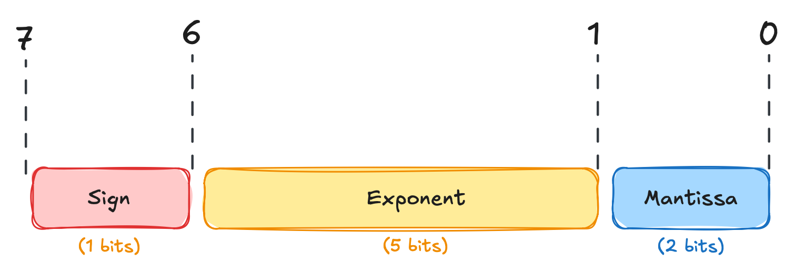
Example: converting 5.75 to floating-point-8
Binary uses only 0 and 1. To the left of the binary point, the places represent 1, 2, 4, 8, and so on. To the right, they represent \(\frac{1}{2}\), \(\frac{1}{4}\), \(\frac{1}{8}\), and so on.
-
Convert the whole-number part: 5
Five is made from 4 + 1. In the 4, 2, 1 places, that means 1, 0, 1.
\[5=1\times4+0\times2+1\times1=101_2\] -
Convert the decimal part: 0.75
0.75 is made from 0.5 + 0.25. Those are the first two places after the binary point, so both places contain 1.
\[0.75=1\times\frac{1}{2}+1\times\frac{1}{4}=0.11_2\] -
Join and normalize the two parts
Joining
101and.11gives101.11. Floating point moves the binary point until only one non-zero digit remains on the left. It moved two places, so the exponent is 2.\[5.75_{10}=101.11_2=1.0111_2\times2^2\] -
Fill the E5M2 fields
Sign: 5.75 is positive, so the sign bit is
0.Exponent: E5M2 adds a bias of 15 so exponents can be stored without a separate sign. The exponent 2 becomes \(2+15=17\). Since 17 is 16 + 1, it is
10001in binary.Mantissa: the leading 1 in
1.0111is understood and does not need to be stored. That leaves0111, but M2 has room for only two mantissa bits. Keeping01would round down to 5.0; because the discarded bits are11, it rounds upward to10, the nearest available value.
Stored FP8 value: 0 10001 10
To read it back, the sign bit keeps the number positive, the real exponent is \(17-15=2\), and 1.10 in binary equals 1.5.
So 5.75 is represented by the nearest E5M2 value, 6.0.
Therefore, floating-point math is really convenient for machine learning as it has a large numerical range! However, for how convenient it is, there are also many drawbacks. For starters, in 8-bit integers, a common multiply or add might be almost instant, whereas for floating-point it has to factor in signs, exponents, etc before multiply or add can be done. This makes the complexity of floating-point very high.
This helped us realize that for this project a numerical format as complex as floating-point may be too “overkill.” We went on with it anyway, using the CVFPU library17. Upon our first step at synthesizing this design, we ran into many errors as this library was incompatible with our FPGA (despite working well on testbench simulations18).
We then pivoted to fixed-point. Fixed-point numbers work differently; imagine having to represent the amount $12.34 in cents. You get 1234; however, you know that the cents will always be the 2 spots after a decimal. That is the motivation behind fixed points; the word “fixed” comes from the fact that there is a fixed place where the decimal value will be.
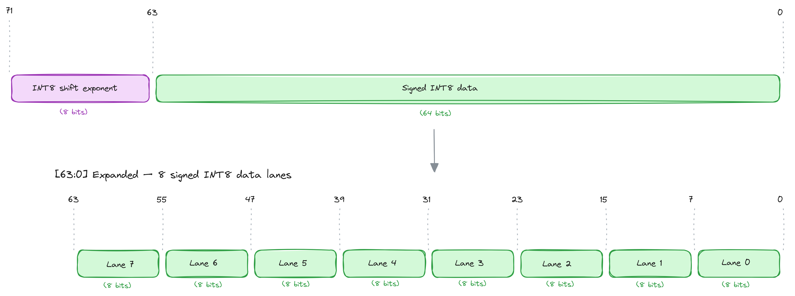
Example: converting 12.5 to fixed-point
Fixed-point avoids storing a decimal point directly. Our format stores each value as a signed whole number, \(q\), and uses one signed shift exponent, \(e\), to tell the hardware where the binary point belongs.
-
Understand what the two stored numbers mean
The eight data lanes each store a signed INT8 whole number. One exponent is shared by all eight lanes, so every lane uses the same scale. The value in any lane is:
\[\text{real value}=q\times2^e\] -
Choose a scale that can represent 12.5
Choose \(e=-1\). Since \(2^{-1}=\frac{1}{2}=0.5\), every step of the stored whole number represents 0.5. To find the integer \(q\), divide 12.5 by that step size.
\[q=\frac{12.5}{0.5}=25\] -
Convert 25 into an 8-bit lane
The binary places are 128, 64, 32, 16, 8, 4, 2, and 1. Since 25 is 16 + 8 + 1, only those three places contain a 1. The unused places contain 0.
\[25=16+8+1=00011001_2\] -
Convert the exponent −1 into signed INT8
Signed INT8 uses two’s complement for negative numbers. Start with positive 1,
00000001, flip every bit to get11111110, then add 1. That makes −1 equal to11111111.\[\begin{aligned}00000001&\longrightarrow11111110\\11111110+1&=11111111\end{aligned}\]
Stored example: 11111111 | 00011001
To read the number back, the data lane gives \(q=25\), while the shared exponent gives \(e=-1\), or a step size of 0.5.
Though fixed points do have the benefits of providing a larger range of numerical explanations, it also mitigates the complexity of hardware, which made this a home run decision for us.
15 / Reflection
Reflection
Looking at our journey, we are extremely proud of what we have built after starting off with no prior chip design knowledge. Our biggest takeaway from the project was to approach everything with a first-principles approach. You don’t have to know everything before trying something crazy. You can learn as you go. By breaking the project down into tiny pieces, we were able to solve problems that seemed impossible at first glance.
Our biggest weapon was not some crazy tool that nobody knows about; it was a pen and a piece of paper. Drawing everything out, no matter what we were working on, helped us visualize the problem at hand and helped us immensely in the ideation process. It made us think about the hardware physically before a single line of code was written.
As we had mentioned at the beginning, one big reason we wanted to work on this project together was to move away from being fully reliant on AI. We drew everything out, discussed different ways to approach problems and solutions to those problems, and only after that did we use AI to accelerate the coding after understanding every element of our design. We had complete ownership and proved to ourselves that in today’s age, we could still think and figure things out ourselves.
You might be wondering, what’s next?
Our current focus is building a compiler to handle all the instruction scheduling, tiling and chunking and have the LPU run completely on our custom instructions.
Since we have proven that our design works on a small parameter model, our next goal is to push the hardware to run on a much larger model from 4.9k to 260k and scale our memory and compiler along with it.
16 / Implementation
FPGA Implementation
Note: This info is a little harder to grasp, it is for those who are interested in how we synthesized the LPU on an FPGA.
We used a Tersaic DE1-SOC development board to implement our design. We used Cocotb to test all the modules and our logic during the design process. Testbenches were really important as they helped us identify any mistakes and test edge cases for our RTL designs (we were able to identify the softmax division bottleneck because of this!) After the completion of our design, we measured ~8.5k tok/s (tokens per second) when running inference of MicroGPT using CocoTB.
When we brought up the design on the FPGA, it was extremely dense and ended up using 100% of the potential logic blocks, which forced us to lower our clock frequency from 100 MHz to 6.75 MHz. This means we would have a clock edge every 160ns on the FPGA, from 10ns on CocoTB. This disparity was one of the reasons why our FPGA tok/s came out to be 20.
Theoretically, the 8500 tok/s can be brought down to 530 tok/s simply due to the clock frequency decrease; the rest of the reduction of tok/s can be attributed to other overheads.
References
Footnotes
Register-Transfer Level (RTL). The language that describes the flow and manipulation of data in a digital circuit as it moves between hardware registers using coding languages like Verilog or VHDL. Back to article
Verilog. A coding language used in hardware to design, simulate, and synthesize digital electronic circuits and microchips. Back to article
Clock Cycle. A single electrical pulse or “tick” of a computer's internal clock. It defines the fundamental unit of time used by the chip to synchronize and execute basic operations. Back to article
Application-Specific Integrated Circuit (ASIC). A microchip custom-built for one specific task rather than for general-purpose computing. Back to article
Sure, Surya. “Decomposing Systolic Arrays.” Surya Sure, n.d. Back to article
Alammar, Jay. “The Illustrated Transformer.” Jay Alammar, June 27, 2018. Back to article
Dubey, Avinash. “How a Neuron in a 2D Artificial Neural Network Bends Output in 3D—Visualization.” TDS Archive, Medium, September 23, 2019. Back to article
Sigmoid and GeLU. These are examples of more activation functions and not necessary to this article. Ankita. “Understanding the Different Types of Activation Functions in Neural Networks.” Medium, April 3, 2025. Back to article
Vector add/Residual add. Combines two equal-sized arrays or tensors by adding their corresponding element values together index by index. Back to article
Groq. A company that specializes in AI infrastructure and cloud services. Also the original inventor of the Language Processing Unit (LPU). Groq, Inc. “Groq.” Back to article
SurjaHead. “softmax-in-hardware: Pipelined Design to Perform the Softmax Computation in Hardware.” GitHub, repository, n.d. Back to article
Fleetwood, Christopher. “You Could Have Designed State of the Art Positional Encoding.” Hugging Face, November 25, 2024. Back to article
DMUX. The opposite of a MUX, where you have one input and the selection bits allow you to choose which output to go to, whereas in a MUX you have multiple inputs and one output. Back to article
Gordić, Aleksa. “Inside NVIDIA GPUs: Anatomy of High Performance Matmul Kernels.” Aleksa Gordić, September 29, 2025. Back to article
DRAM (Dynamic Random-Access Memory). Standard computer memory that stores active data in a flat 2D grid. HBM (High Bandwidth Memory). An advanced, high-speed version of DRAM that stacks those memory layers vertically directly next to the processor. Back to article
In December 2025, Nvidia entered into a $20 billion Groq transaction structured as a non-exclusive technology licensing and asset agreement rather than a formal corporate buyout. The arrangement allowed Nvidia to license Groq’s Language Processing Unit (LPU) inference technology, acquire key physical assets, and hire founder Jonathan Ross alongside core Silicon Valley engineering talent. Groq, Inc. “Groq and Nvidia Enter Non-Exclusive Inference Technology Licensing Agreement to Accelerate AI Inference at Global Scale.” Groq Newsroom, December 24, 2025. Back to article
CVFPU. An open-source, floating-point unit written in SystemVerilog that supports standard RISC-V and transprecision data formats for processors. OpenHW Group. “cvfpu: Parametric Floating-Point Unit with Support for Standard RISC-V Formats and Operations as Well as Transprecision Formats.” GitHub, repository, n.d. Back to article
TestBench. A virtual simulation environment used to apply test inputs to a design and check its behaviour before building the physical circuit. Back to article
Abts, Dennis, et al. “Think Fast: A Tensor Streaming Processor (TSP) for Accelerating Deep Learning Workloads.” 2020 ACM/IEEE 47th Annual International Symposium on Computer Architecture (ISCA), Valencia, Spain, IEEE, 2020, pp. 145–158. doi: 10.1109/ISCA45697.2020.00023.
Abts, Dennis, et al. “A Software-Defined Tensor Streaming Multiprocessor for Large-Scale Machine Learning.” Proceedings of the 49th Annual International Symposium on Computer Architecture (ISCA ’22), Association for Computing Machinery, 2022, pp. 567–580. doi: 10.1145/3470496.3527405.